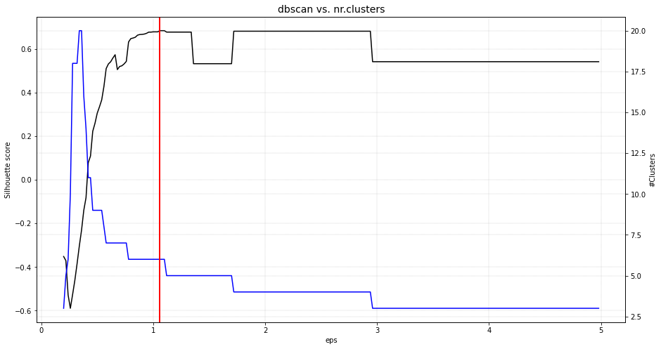
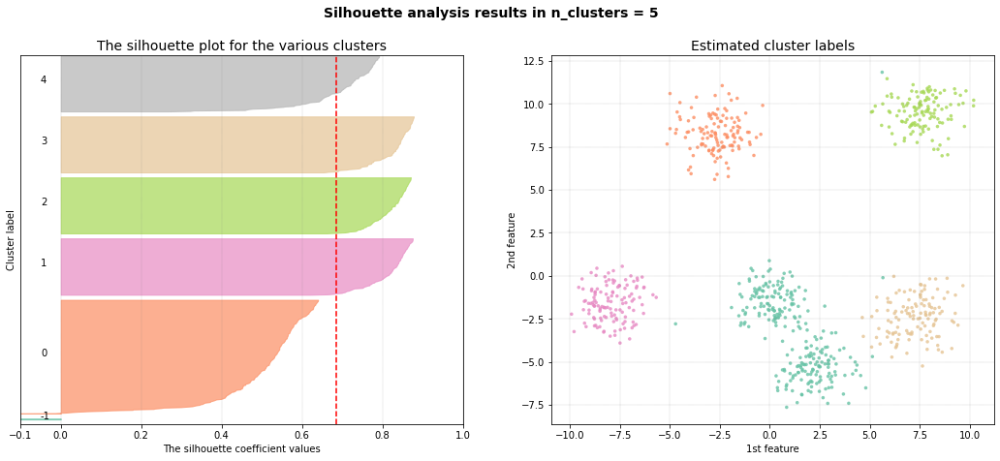
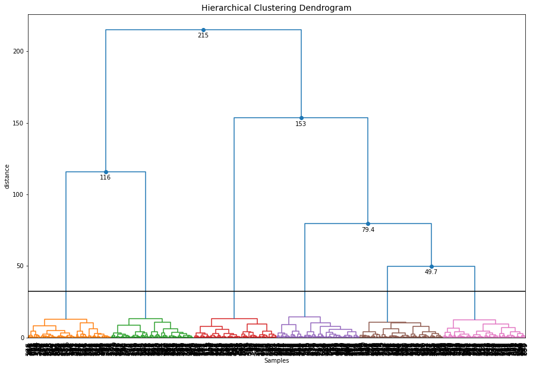
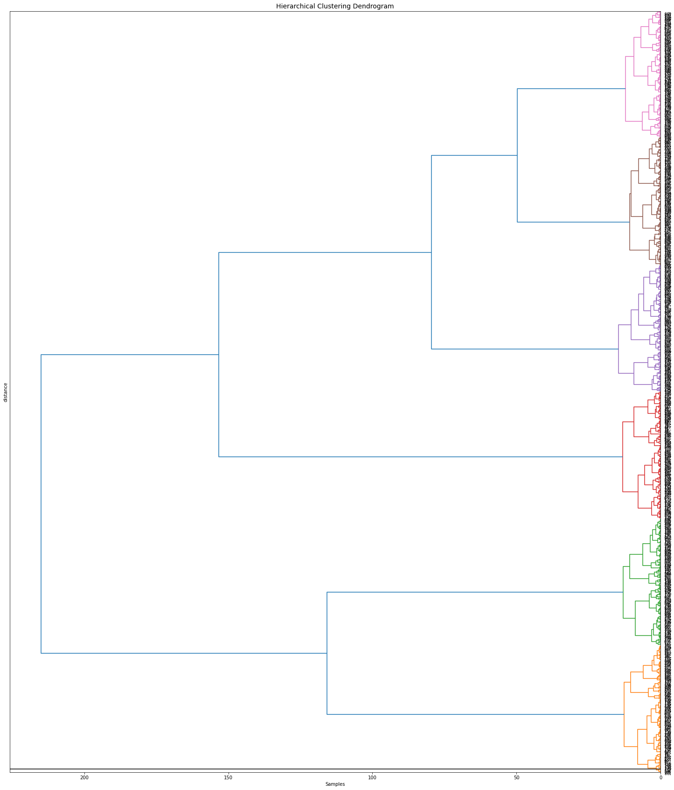

Generate data
Install requried libraries
pip install scatterd
pip install sklearn
# Imports
from sklearn.datasets import make_blobs
# Generate random data
X, _ = make_blobs(n_samples=750, centers=6, n_features=2, cluster_std=1)
# Scatter samples
scatterd(X[:,0], X[:,1], figsize=(15, 10));
|

Plot
# Import
from clusteval import clusteval
# Silhouette cluster evaluation.
ce = clusteval(evaluate='silhouette')
# In case of using dbindex, it is best to clip the maximum number of clusters to avoid finding local minima.
ce = clusteval(evaluate='dbindex', max_clust=10)
# Derivative method.
ce = clusteval(evaluate='derivative')
# DBscan method.
ce = clusteval(cluster='dbscan')
# Fit
ce.fit(X)
# Plot
ce.plot()
|
|
|
 |


Scatterplot
The scatter plots for the methods silhouette and dbindex were identical. Small differences were seen for the derivative method. Only the dbscan method was not able to identify the six clusters but detected five instead.
# Plot
ce.scatter(X)
|
|
|
 |


Dendrogram
Hierarchical tree plot
To furter investigate the clustering results, a dendrogram can be created.
ce.dendrogram()
 |
Change the cut threshold
The dendrogram function can now also be used to create differents cuts in the hierarchical clustering and retrieve the associated cluster labels. Let’s cut the tree at level 60
# Plot the dendrogram and make the cut at distance height 60
y = ce.dendrogram(max_d=60)
# Cluster labels for this particular cut
print(y['labx'])
|

Orientation
Change various parameters, such as orientation, leaf rotation, and the font size.
# Plot the dendrogram
ce.dendrogram(orientation='left', leaf_rotation=180, leaf_font_size=8, figsize=(25,30))
 |